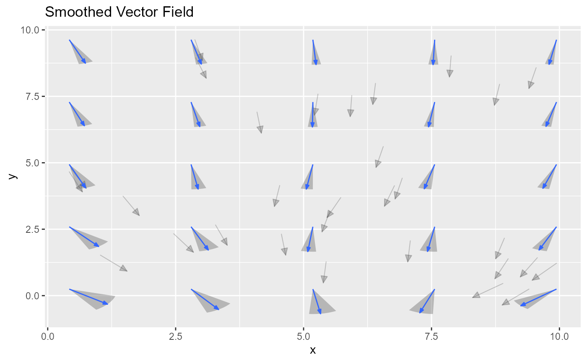
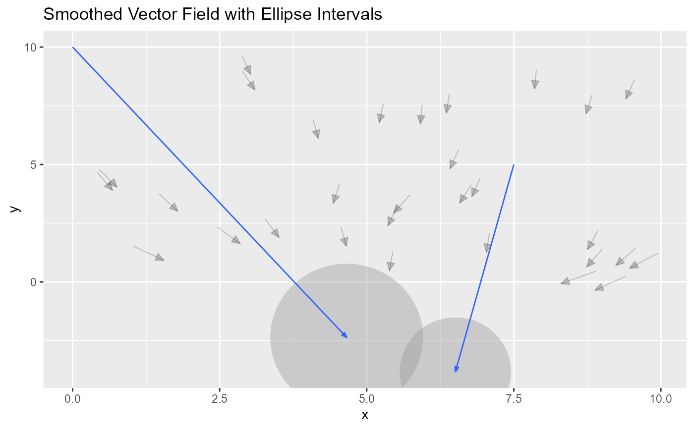
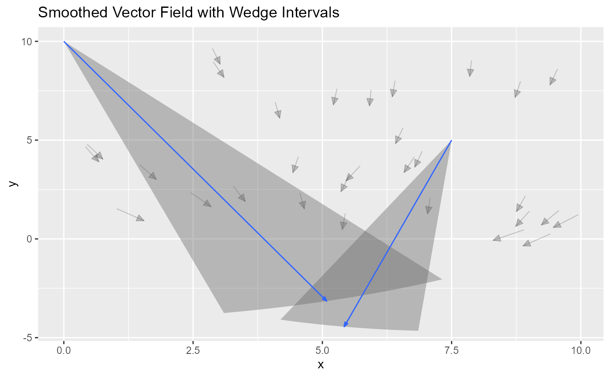

![[Experimental]](figures/lifecycle-experimental.svg)
Usage
geom_vector_smooth(
mapping = NULL,
data = NULL,
stat = "vector_smooth",
position = "identity",
...,
na.rm = FALSE,
show.legend = NA,
inherit.aes = TRUE,
n = c(11, 11),
xlim = NULL,
ylim = NULL,
method = "gam",
se = TRUE,
se.circle = FALSE,
pi_type = NULL,
conf_level = 0.95,
formula = cbind(fx, fy) ~ x * y,
eval_points = NULL,
arrow = grid::arrow(angle = 20, length = unit(0.015, "npc"), type = "closed")
)
stat_vector_smooth(
mapping = NULL,
data = NULL,
geom = "vector_smooth",
position = "identity",
...,
na.rm = FALSE,
show.legend = NA,
inherit.aes = TRUE,
n = c(11, 11),
xlim = NULL,
ylim = NULL,
method = "gam",
se = TRUE,
se.circle = FALSE,
conf_level = 0.95,
pi_type = NULL,
formula = cbind(fx, fy) ~ x * y,
eval_points = NULL,
arrow = grid::arrow(angle = 20, length = unit(0.015, "npc"), type = "closed")
)Arguments
- mapping
A set of aesthetic mappings created by
ggplot2::aes(). Required: Must includexandy; vector displacements are defined byfxandfy.- data
A data frame containing the raw vector data.
- stat
The statistical transformation.
geom_vector_smooth()always usesStatVectorSmooth, which fits the model; another value is ignored with a warning.- position
Position adjustment, either as a string or the result of a position adjustment function.
- ...
Other arguments passed to
ggplot2::layer()and the underlying geometry/stat.- n
An integer vector specifying the number of grid points along each axis for smoothing.
- xlim, ylim
Numeric vectors of length 2 giving the range of the grid on which the smoothed field is evaluated when
eval_pointsisNULL. They default to the range of the data.- method
Character. Specifies the smoothing method. Supported options are
"gam"(default),"lm", and"kriging". The"gam"method fitsfxandfytogether, each with the smooths(x, y), in mgcv's multivariate normal family (mgcv::mvn()), which also estimates the correlation of their residuals; the"lm"method fits the multivariate linear model given byformula, and"kriging"uses a cokriging approach via thegstatpackage. Each smooth uses up to 30 basis functions, and at most half as many as there are distinct locations; at least 5 locations are needed. With fewer than 10 locations, or data without noise,fxandfyare fitted separately and their residuals are taken to be uncorrelated.- se
Logical. If
TRUE, prediction intervals for the tip of each vector are computed and plotted. For everymethodthey cover a new observation at that location, not only the fitted mean: their covariance is the covariance of the fitted vector plus the residual covariance, so ellipses tilt whenfxandfyare correlated.- se.circle
Logical. Defaults to
FALSE. IfTRUE, circles are drawn around the origin of each vector. By default, the circle’s radius is computed as the magnitude of the predicted vector.- pi_type
Character. Determines the display style for prediction intervals. By default (
NULL), ellipses are drawn ateval_pointsand wedges on a grid."ellipse": Ellipses are used to represent the covariance of the predictions."wedge": Angular wedges show the prediction interval for the direction of each vector: the centralconf_levelrange of the angle of its tip, from the exact distribution of that angle when the tip is normally distributed with the predicted mean and covariance."length": A band along each vector shows the prediction interval for its length: the centralconf_levelrange of the length of its tip, from the exact distribution of that length. On a grid, where the vectors are drawn at a common length, each band is scaled with its vector and cut off at twice the vector's drawn length. Ellipses are a joint region for the tip; wedges and length bands are each an interval for one coordinate, the direction or the length, and only one type is drawn at a time. Ellipses needeval_points: ifpi_type = "ellipse"is set andeval_pointsisNULL, wedges are drawn instead, with a warning.
- conf_level
Numeric. Specifies the confidence level for the prediction intervals. Default is
0.95. If a vector is given, its first element is used.- formula
A formula specifying the multivariate linear model used for smoothing when
method = "lm". The default iscbind(fx, fy) ~ x * y. It is ignored by the other methods, with a warning if it is supplied whenmethod = "gam".- eval_points
A data frame of evaluation points. If provided, these specify the grid where the smoothing model is evaluated. If
NULL, a grid is generated based onn.- arrow
A
grid::arrow()specification for arrowheads on the smoothed vectors.
Details
geom_vector_smooth() creates a ggplot2 layer that visualizes a smooth
vector field. It takes raw vector data and applies smoothing (by default a
generalized additive model; a multivariate linear model or cokriging are
also available via method) to estimate the underlying vector field. This
functionality is analogous to geom_smooth() in ggplot2 but is tailored for
vector data rather than scalar responses.
Aesthetics
geom_vector_smooth() supports the following aesthetics
(required aesthetics are in bold):
x: The x-coordinate of the vector's starting point.y: The y-coordinate of the vector's starting point.fx: The horizontal component of the vector displacement.fy: The vertical component of the vector displacement.color: The color of the vector lines.linewidth: The thickness of the vector lines.linetype: The type of the vector lines (e.g., solid, dashed).alpha: The transparency level of the vectors.arrow: An aesthetic that can be used to modify arrowhead properties.
Details
Multivariate Linear Model:
The "lm" method fits a multivariate linear model to predict vector
displacements (fx and fy) based on the coordinates x and y,
including interaction terms (x * y). This model smooths the raw vector
data to provide an estimate of the underlying vector field.
Prediction Intervals:
When se = TRUE, prediction intervals are computed for the smoothed
vectors. Three types of intervals are supported:
Ellipse: Ellipses represent the joint uncertainty (covariance) in the predicted
fxandfy.Wedge: Wedges (angular sectors) show the range of likely directions of each vector; their radius is the predicted vector's length.
Length: Bands along each vector show the range of likely lengths. The type of interval displayed is controlled by
pi_type, and the confidence level is set viaconf_level.
Examples
# Function to generate vectors
generate_vectors <- function(v) {
x <- v[1]
y <- v[2]
c(
sin(x) + sin(y) + rnorm(1, 5, 1),
sin(x) - sin(y) - rnorm(1, 5, 1)
)
}
# Set seed for reproducibility
set.seed(123)
# Create sample points and compute vectors
sample_points <- data.frame(
x = runif(30, 0, 10),
y = runif(30, 0, 10)
)
result <- t(apply(sample_points, 1, generate_vectors))
sample_points$xend <- result[, 1]
sample_points$yend <- result[, 2]
sample_points$fx <- sample_points$xend - sample_points$x
sample_points$fy <- sample_points$yend - sample_points$y
sample_points$distance <- sqrt(sample_points$fx^2 + sample_points$fy^2)
sample_points$angle <- atan2(sample_points$fy, sample_points$fx)
# Define evaluation points
eval_points <- data.frame(
x = c(0, 7.5),
y = c(10, 5)
)
# Example 1:
ggplot(sample_points, aes(x = x, y = y)) +
geom_vector(aes(fx = fx, fy = fy, color = NULL), center = FALSE, alpha = 0.2) +
geom_vector_smooth(aes(fx = fx, fy = fy), n = 5) +
ggtitle("Smoothed Vector Field")

# Example 2: Ellipse with eval_points
ggplot(sample_points, aes(x = x, y = y)) +
geom_vector(aes(fx = fx, fy = fy, color = NULL), center = FALSE, alpha = 0.2) +
geom_vector_smooth(aes(fx = fx, fy = fy), eval_points = eval_points, conf_level = 0.9) +
ggtitle("Smoothed Vector Field with Ellipse Intervals")

# Example 3: Wedge with eval_points
ggplot(sample_points, aes(x = x, y = y)) +
geom_vector(aes(fx = fx, fy = fy, color = NULL), center = FALSE, alpha = 0.2) +
geom_vector_smooth(aes(fx = fx, fy = fy), eval_points = eval_points, pi_type = "wedge") +
ggtitle("Smoothed Vector Field with Wedge Intervals")
